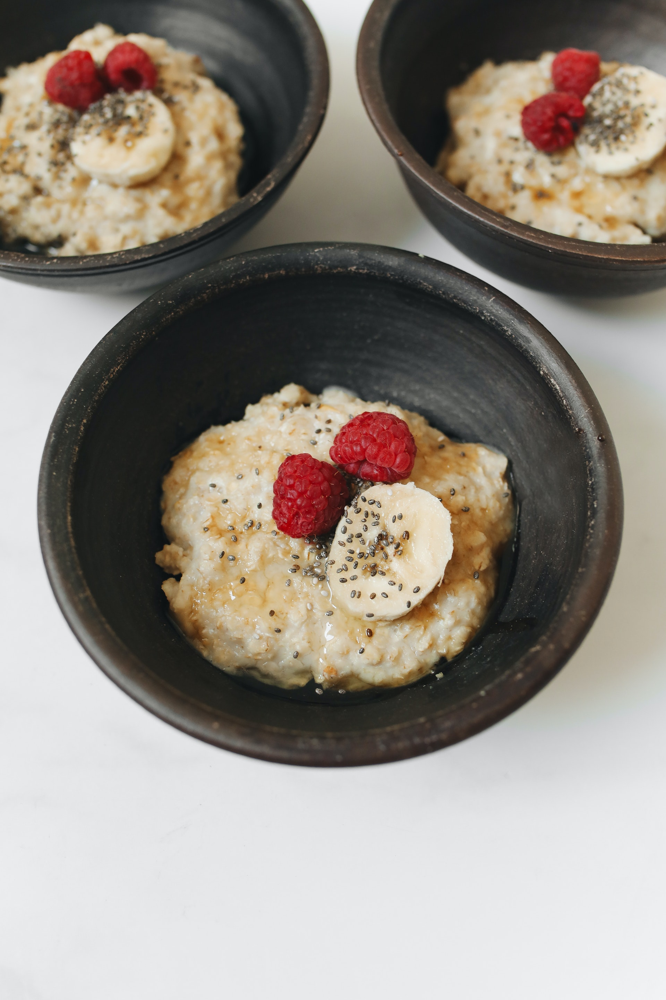

Overnight Oats

Photo by Polina Tankilevitch
Ingredients
- 50g Oats
- 120g Almond milk - or other option of vegetable milk
- 15g Peanut butter - better if it is powder
- 20g Whey protein - Any flavour of your taste
- 10g Chocolate drops
Instructions
- Pour the oats in a jar or mug and the milk, mix it well.
- Add the peanut butter and whey protein, and mix it well
- Add the chocolat drops
- Put it into your fridge and leave it Overnight.